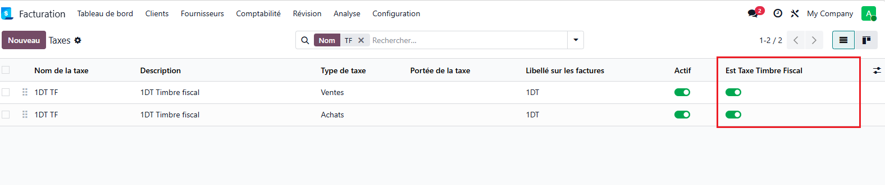
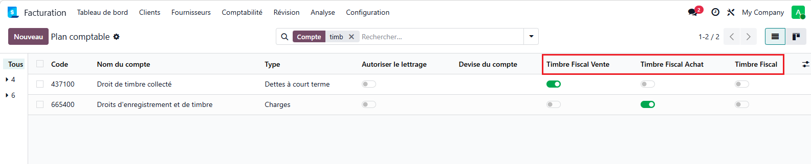
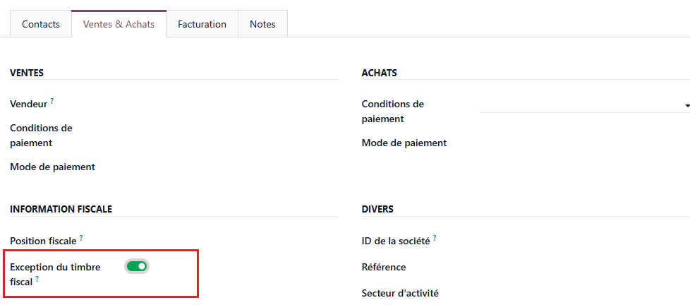
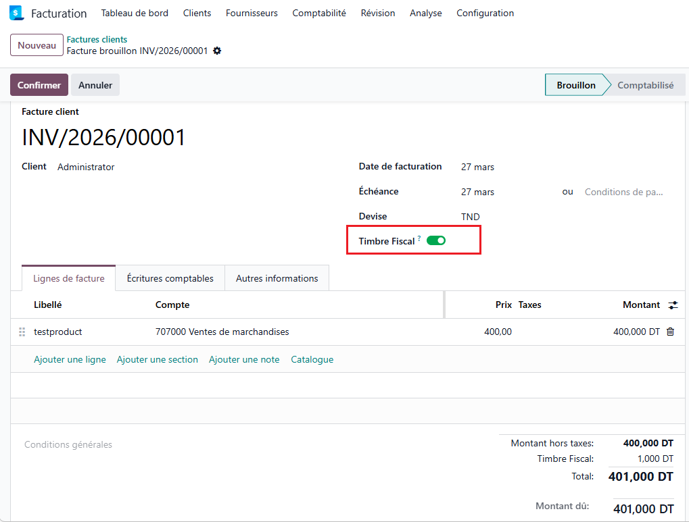

This module automatically applies the fiscal stamp (timbre fiscal) on customer and vendor invoices in Odoo. As soon as an invoice is created, the stamp line is added silently in the background, no manual action required. The stamp amount is driven by a dedicated tax and posted directly on the correct accounting account.
This module is compliant with Tunisian tax regulations and follows the local accounting standards in force.
Developed by Digi-IT
In Accounting > Taxes, open the relevant tax and enable Est Taxe Timbre Fiscal. Set the Tax Type to Sale for customers or Purchase for vendors.
The tax amount (fixed or percentage) defines the stamp value that will be applied on every eligible invoice. Make sure to configure the tax repartition account so the stamp posts to the correct ledger.

In Accounting > Chart of Accounts, flag the relevant account(s):
The module resolves the account automatically based on the invoice type, falling back to the generic account when needed.

On any partner form, enable Exception du timbre fiscal to permanently exclude that partner from the stamp.
When an invoice is created or the partner is changed on an existing invoice, the module checks this flag and automatically removes the stamp line if the partner is exempt, no manual cleanup required.

Each invoice carries a Timbre Fiscal checkbox (enabled by default). Unchecking it removes the stamp line immediately from the invoice, without affecting other documents or the partner configuration.
Re-enabling the checkbox on a non-exempt partner's invoice re-adds the stamp line automatically.

Before first use:
1. Enable Est Taxe Timbre Fiscal on the stamp tax and set its amount and repartition account.
2. Flag the relevant account(s) as Timbre Fiscal Vente / Timbre Fiscal Achat in the chart of accounts.
3. Optionally mark exempt partners with Exception du timbre fiscal on their partner form.
4. Create invoices as usual, the stamp is applied automatically.
Odoo 19.0
For any support, contact us:
contact@digi-it.com.tn